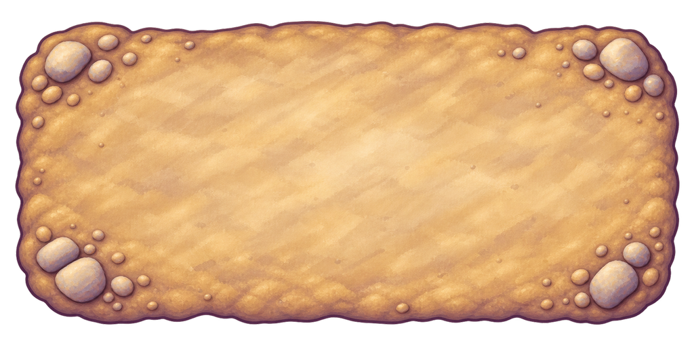

Painted river earth field
One complete generated top-down ground prop. Both exact native and uniform complete-canvas derivative directly reviewed. V5 inspected bed-context4.6 at both widths; no production, full-room native2048 coverage, actor/contact, complete-action, device, child or owner approval.
Why existing soil and slab failed this grid · Exact ImageGen prompt · Source scores and provenance · Every28 mounted study state
Native original1774×887 · 4.6/5 source
One complete broad2.176:1 top-down loam patch with clear quiet centre, softly irregular rounded outline and clustered exterior corner stones. Ochre/cream broad painted bands and lavender/plum edge match the preserved source family. Authored upper/lower/left/right contour is complete: dominant alpha stays35–54px from the native edges. Sparse tiny marks remain subordinate. Source4.6 only; actual grid and stones/ports must be inspected after mounting.
10314d0693237ec1c7ae188cb1ed587170e6802da0cc0e49503ed7ba309996abWhole-canvas derivative1024×512 · 4.6/5 source

Complete1024x512 RGBA derivative directly inspected: full rounded authored contour and all corner-stone clusters retained, quiet broad painted field, no visible clipping or destructive cleanup. Source4.6 and V5 bed-context4.6; source review does not pass wet joins4.4 or full action.
92e5860e8bdcf3a78263e13f2a31569d2cc1729babbd22ba96369320bd268d47